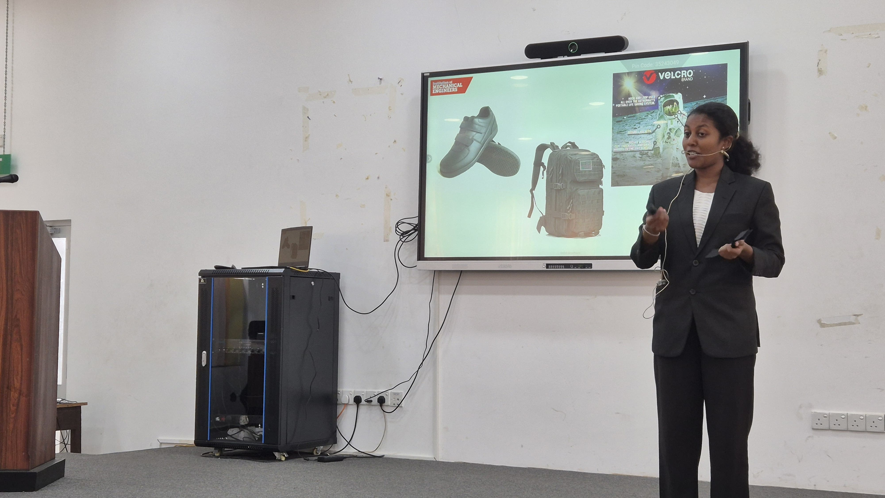

ACHIEVEMENT AWD-02 / PRESENTATION DETAIL
Speak Out for Engineering (SOFE) 2025
Sri Lankan Finalist at IMechE Sri Lanka, presenting how natural systems can become blueprints for efficient, resilient, and sustainable engineering.
Presentation Description
My SOFE 2025 presentation explored the theme “Nature is the Blueprint of Engineering”. It examined how biological systems achieve performance through evolution, efficiency, resilience, adaptability, and careful use of resources, then connected those principles to practical engineering design.
The presentation was designed to make engineering accessible through familiar examples. Rather than treating nature as only an inspiration for appearance, it showed how observing natural mechanisms can help engineers solve problems in structures, fluid flow, materials, energy, and environmental control.
Core Ideas
- Natural systems are refined over time to perform effectively with limited material and energy.
- Good engineering can learn from the way nature balances strength, flexibility, efficiency, and repair.
- Biomimicry encourages engineers to study function and mechanism, not simply copy a natural shape.
- Nature-inspired solutions can support more sustainable and resource-conscious design decisions.
Case Studies Presented
Velcro and burdock burrs
Velcro was presented as an example of how a simple natural attachment mechanism can become a practical engineered fastening system. The tiny hooks on burdock burrs inspired the hook-and-loop principle used in the product.
Humpback whale flippers and wind turbines
The leading edge tubercles on humpback whale flippers were connected to improved flow control and lift. This biomimetic idea has influenced the design of wind-turbine blades, helping engineers explore better performance and stall behaviour.
Mangrove and coral-root anchoring
Mangrove root systems and coral-root-like structures were used to discuss anchoring and soil stabilization. Their branching geometry distributes loads and improves resistance to movement, offering ideas for geotechnical and structural applications.
Termite-mound ventilation
Termite mounds demonstrated how passive ventilation and thermal regulation can be achieved through channels, openings, and airflow paths. This example showed how buildings can reduce dependence on mechanical cooling by learning from natural environmental control.
Engineering Communication
Preparing for SOFE strengthened my ability to research a technical topic, identify the engineering principle behind each example, and communicate it clearly to a wider audience. The presentation combined scientific explanation with visual storytelling so that each case study moved from a natural observation to an engineering application.
Reaching the Sri Lankan final made the experience especially valuable as an opportunity to represent engineering ideas beyond a conventional classroom or laboratory setting.
Presentation Takeaways
- Observation is an important part of engineering problem solving.
- Efficient solutions often come from understanding how a system works as a whole.
- Biomimicry can connect aerodynamics, structures, materials, sustainability, and architecture.
- Clear technical communication helps engineering ideas reach people outside a specialist audience.
MEDIA ARCHIVE
Gallery

Presentation File
Review the original SOFE finals presentation for the complete visual sequence, examples, and supporting slides.
Open SOFE finals presentation →